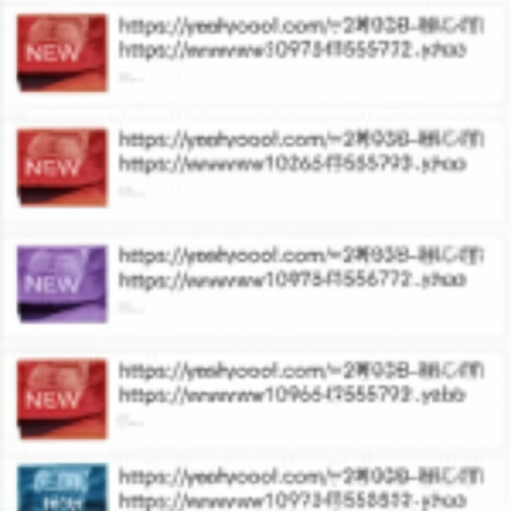

# 近期新聞摘要
## 引言
這篇文章彙整了過去 24 小時內的多個新聞來源，涵蓋娛樂、財經、社會等多個領域。內容包括台灣女星李佳穎的育兒經歷、房屋稅政策更新、房貸相關討論、以及一些體育和財經資訊。讓我們一起來看看這些新聞的細節。
## 主體內容
### 第一點：娛樂新聞聚焦李佳穎的育兒之路
多篇報導都提到了台灣女星李佳穎的育兒經歷。她歷經多次取卵和植入，終於在 2024 年底迎來了兒子。新聞強調她成為母親後的重心轉移，以及她在育兒過程中展現的堅強和母愛。例如：
* **大紀元**: 報導李佳穎將九成時間投入家庭。
* **TVBS新聞網**: 提及李佳穎被問及二胎計畫。
* **民視新聞**: 形容李佳穎為「超人媽媽」，強調她育兒的辛苦和喜悅。
這些報導突顯了明星媽媽在光鮮亮麗背後的付出和挑戰。
### 第二點：房屋稅務和房貸資訊
另一部分新聞涉及房屋稅務和房貸。TVBS新聞報導了房屋稅 2.0 自住「遷戶籍期限延至 6/2」的消息，提醒屋主注意時限。此外，Threads 上有關於「房貸」的討論，提供關於房貸保險的資訊，並提及京華城案件。
* **TVBS新聞**: 提供房屋稅 2.0 的期限更新資訊。
* **Threads**: 討論房貸保險和京華城案件。
這些資訊對關注房地產的民眾來說相當重要。
### 第三點：其他多元資訊
除了娛樂和房產新聞外，還有一些其他值得關注的資訊：
* **體育博彩網站**: 雖然來源可疑，但顯示了線上博彩的存在。
* **抖音**: 提到林依晨的新劇即將上映。
* **X (Twitter)**: 王局志安發布新聞投稿訊息。
* **Yahoo奇摩新聞**: 包含廣東歐派股票的相關新聞。
這些資訊覆蓋了更廣泛的領域，包括娛樂、社交媒體和財經。
## 結論
本次新聞摘要涵蓋了娛樂、房地產、社會等多個方面。從李佳穎的育兒故事到房屋稅的最新政策，再到社交媒體上的討論，這些資訊反映了近期社會關注的焦點。希望這些摘要能幫助讀者快速掌握重要資訊。